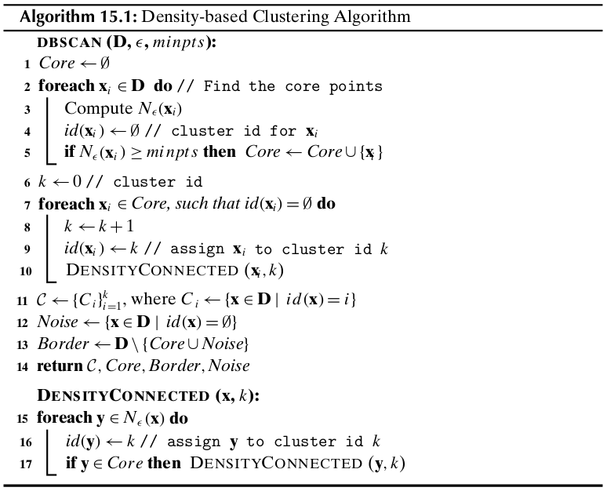
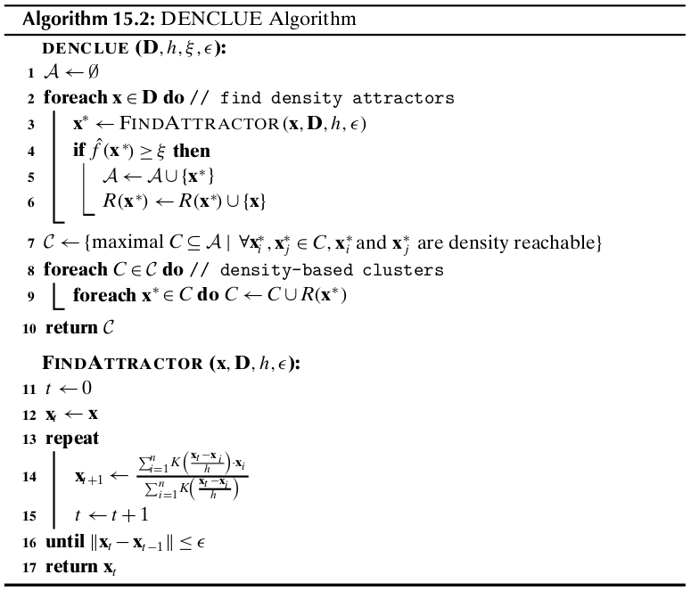

Chapter 15 Density-based Clustering¶
15.1 The DBSCAN Algorithm¶
Density-based clustering uses the local density of points to determine the clusters, rather than using only the distance between points. We define a ball of radius \(\epsilon\) around a point \(\x\in\R^d\), called the \(\epsilon\)-neighborhood of \(\x\), as follows:
Note
\(N_\epsilon(\x)=B_d(\x, \epsilon)=\{\y|\lv\x-\y\rv\leq\epsilon\}\)
Here \(\lv\x-\y\rv\) is the Euclidean distance between points \(\x\) and \(\y\). However, other distance metrics can also be used.
For any point \(\x\in\D\), we say that \(x\) is a core point if there are at least minpts points in its \(\epsilon\)-neighborhood. A border point is defined as a point that does not meet the minpts threshold, but it belongs to the \(\epsilon\)-neighborhood of some core point \(\bs{\rm{z}}\). If a point is neight a core nor a border point, then it is called a noise point or an outlier.
We say that a point \(\x\) is directly density reachable from another point \(y\) if \(\x\in N_\epsilon(\y)\) and \(\y\) is a core point. We say that \(\x\) is density reachable from \(y\) if there exists a chain of points, \(\x_0,\x_1,\cds,\x_l\), such that \(\x=\x_0\) and \(y=\x_l\) and \(\x_i\) is directly density reachable from \(\x_{i-1}\) for all \(i=1,\cds,l\). Define any two points \(\x\) and \(\y\) to be density connected if there exists a core point \(\bs{rm{z}\), such that both \(\x\) and \(\y\) are density reachable from \(\bs{\rm{z}}\). A density-based cluster is defined as a maximal set of density connected points.
One limitation of DBSCAN is that it is sensitive to the choice of \(\epsilon\), in particular if clusters have different densities. If \(\epsilon\) is too small, sparser clusters will be categorized as noise. If \(\epsilon\) is too large, denser clusters may be merged together.
Computational Complexity
The overall complexity of DBSCAN is \(O(n^2)\) is the worst-case.
15.2 Kernel Density Estimation¶
15.2.1 Univariate Density Estimation¶
We can directly estimate the cumulative distribution function from the data by counting how many points are less than or equal to \(x\):
We can estimate the density funciton by taking the derivative of \(\hat{F}(x)\), by considering a window of small width \(h\) centered at \(x\), that is,
where \(k\) is the number of points that lie in the window of width \(h\) centered at \(x\), that is, with the closed interval \([x-\frac{h}{2},x+\frac{h}{2}]\)
Kernel Estimator
Kernel density estimation relies on a density kernel function \(K\) that is non-negative, symmetric, and integrates to 1, that is, \(K(x)\geq 0, K(-x)=K(x)\) for all values \(x\), and \(\int K(x)dx=1\). Thus, \(K\) is essentially a probability density function.
Discrete Kernel
The density estimate \(\hat{f}(x)\) can also be rewritten in terms of the kernel function as follows:
Note
\(\dp\hat{f}(x)=\frac{1}{nh}\sum_{i=1}^nK\bigg(\frac{x-x_i}{h}\bigg)\)
where the discrete kernel function \(K\) computes the number of points in a window of width \(h\), and is defined as
Note
\(K(z)=\left\{\begin{array}{lr}1\quad\rm{if\ }|z|\leq\frac{1}{2}\\0\quad\rm{Otherwise}\end{array}\right.\)
Gaussian Kernel
Instead of the discrete kernel, we can define a more smooth transition of influence via a Gaussian kernel:
Thus, we have
Note
\(\dp K\bigg(\frac{x-x_i}{h}\bigg)=\frac{1}{\sqrt{2\pi}}\exp\bigg\{-\frac{(x-x_i)^2}{2h^2}\bigg\}\)
Here \(x\), which is at the center of the window, plays the role of the mean, and \(h\) acts as the standard deviation.
15.2.2 Multivariate Density Estimation¶
The volume of a \(d\)-dimensional hypercube is given as
The density is then estimated as the fraction of the point weight lying within the \(d\)-dimensional window centered at \(\x\), divided by the volume of the hypercube:
where the multivariate kernel function \(K\) satisfies the condition \(\int K(\z)d\z=1\).
Discrete Kernel
Note
\(K(\z)=\left\{\begin{array}{lr}1\quad\rm{if\ }|z_j|\leq\frac{1}{2},\rm{for\ all\ dimensions\ }j=1,\cds,d\\0\quad\rm{Otherwise}\end{array}\right.\)
Gaussian Kernel
The \(d\)-dimensional Gaussian kernel is given as
where we assume that the covariance matrix is the \(d\times d\) identity matrix, that is, \(\Sg=\I_d\).
Note
\(\dp K\bigg(\frac{\x-\x_i}{h}\bigg)=\frac{1}{(2\pi)^{d/2}}\exp\bigg\{-\frac{(\x-\x_i)^T(\x-\x_i)}{2h^2}\bigg\}\)
Each point contributes a weight to the density estimate inversely proportional to its distance from \(\x\) termpered by the width parameter \(h\).
15.2.3 Nearest Neighbor Density Estimation¶
An alternative approach to density estimation is to fix \(k\), the number of points required to estimate the density, and allow the volume of the enclosing region to vary to accomodate those \(k\) points. This apporach is called the \(k\) nearest neighbors (KNN) approach to density estimation.
Given \(k\), the number of neighbors, we estimate the density at \(\x\) as follows:
where \(h_\x\) is the distance from \(\x\) to its \(k\)th nearest neighbor, and \(\rm{vol}(S_d(h_\x))\) is the volume of the \(d\)-dimensional hypersphere \(S_d(h\x)\) centered at \(\x\), with radius \(h_\x\).
15.3 Density-Based Clustering: DENCLUE¶
Density Attractors and Gradient
A point \(\x^*\) is called a density attractor if it is a local maxima of the probability density funciton \(f\).
The gradient at a point \(\x\) can be computed as the multivariate derivative of the probability density, given as
For the Gaussian kernel, we have
Setting \(\z=\frac{\x-\x_i}{h}\) above, we get
The gradient at a point \(\x\) is given as
Note
\(\dp\nabla\hat{f}{\x}=\frac{1}{nh^{d+2}}\sum_{i=1}^nK\bigg(\frac{\x-\x_i}{h}\bigg)\cd(\x_i-\x)\)
We say that \(\x^*\) is a density attractor for \(\x\), or alternatively that \(\x\) is density attracted to \(\x^*\), if a hill climbing process started at \(\x\) converges to \(\x^*\).
The typical approach is to use the graident-ascent method to compute \(\x^*\), that is, starting from \(\x\), we iteratively update it at each step \(t\) via the update rule:
where \(\eta>0\) is the step size. One can directly optimize the move direction by setting the gradient to the zero vector:
The point \(\x\) is involved on both the left- and right-hand sides above; however, it can be used to obtain the following iterative update rule:
Note
\(\dp\x_{t+1}=\frac{\sum_{i=1}^nK(\frac{\x_t-\x_i}{h})\x_i}{\sum_{i=1}^nK(\frac{\x_t-\x_i}{h})}\)
Center-defined Cluster
A cluster \(C\subseteq\D\), is called a Center-defined cluster if all the points \(\x\in C\) are density attracted to a unique density attractor \(\x^*\), such that \(\hat{f}(\x^*)\geq\xi\), where \(\xi\) is a user-defined minimum density threshold. In other words,
Density-defined Cluster
A cluster \(C\subseteq\D\) is called a density-based cluster if there exists a set of density attractors \(\x_1^*,\x_2^*,\cds,\x_m^*\), such that
Each point \(\x\in C\) is attracted to some attractor \(\x_i^*\).
Each density attractor has density above \(\xi\). That is, \(\hat{f}(\x_i^*)\geq\xi\).
Any two density attractors \(\x_i^*\) and \(\x_j^*\) are density reachable, that is, there exists a path from \(\x_i^*\) to \(\x_j^*\), such that for all points \(\y\) on the path, \(\hat{f}(\y)\geq\xi\).
DENCLUE Algorithm
DENCLUE: Special Cases
If we let \(h=\epsilon\) and \(\xi=minpts\), then using a discrete kernel DENCLUE yields exactly the same clusters as DBSCAN.
Computational Complexity
The time for DENCLUE is dominated by the cost of the hill-climbing process.